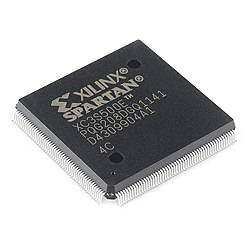
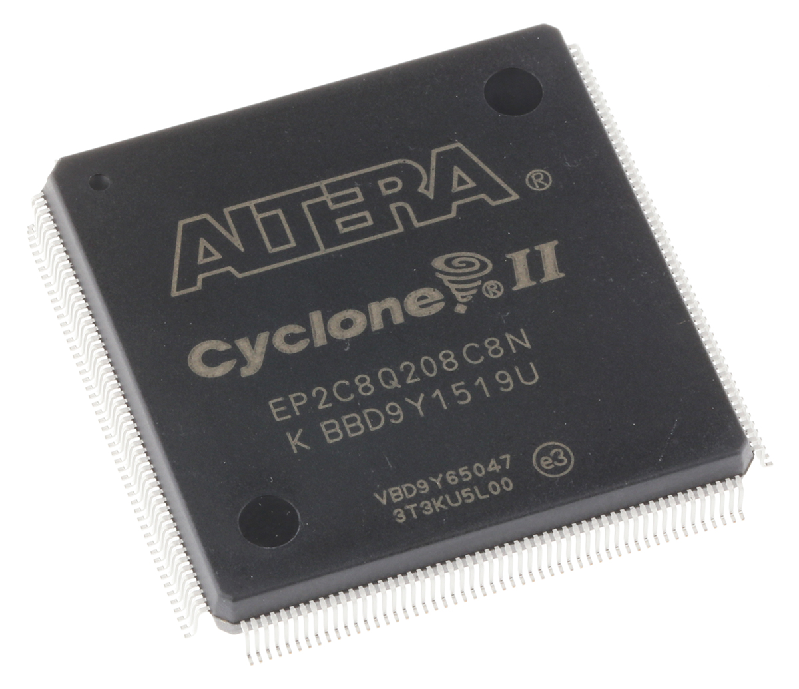
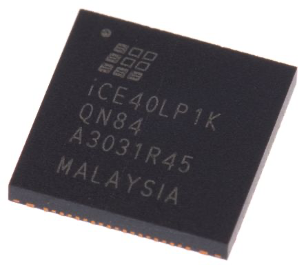
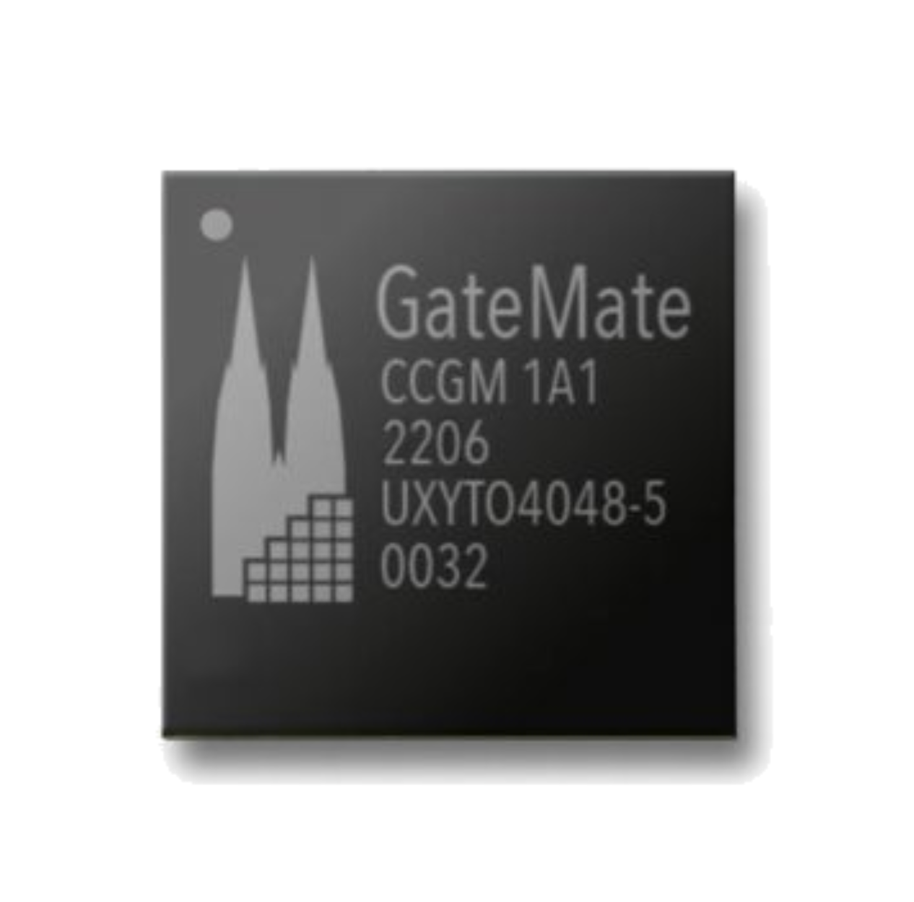

FPGA Families & Modern Vendors
The field-programmable landscape is governed by a diverse ecosystem of manufacturers, each catering to different performance tiers, power envelopes, and industrial verticals. From multi-billion-gate AI super-computing chips to sub-milliwatt miniature configurations running inside smart devices, selecting the appropriate hardware family depends heavily on both logic primitives and software IDE constraints.
The Big Four: Corporate History & Evolution
1. AMD / Xilinx

Founded in 1984 by Ross Freeman and Bernard Vonderschmitt, Xilinx invented the commercial FPGA. For decades, they pioneered high-performance silicon architectures. In 2022, chip giant AMD acquired Xilinx for $49 billion, integrating Xilinx's programmable fabric into their data center server line-ups to compete against specialized AI computing systems.
2. Altera (Intel Programmable Solutions Group)

Altera was formed in 1983 and stood as Xilinx's fierce rival for over thirty years. Intel acquired Altera in 2015 for $16.7 billion to pair logic matrices with their Xeon processors. In a massive corporate turn-around, Intel spun Altera back out as a standalone independent entity to allow them to focus aggressively on core industrial market configurations.
3. Lattice Semiconductor

Established in 1983, Lattice survived the intense corporate wars between Xilinx and Altera by completely pivoting away from massive, power-hungry computing devices. Lattice focuses squarely on low-power, ultra-compact, cost-efficient FPGAs. If a system needs to run on tiny battery packs or control simple hardware routines inside small consumer electronics, Lattice is the industry standard.
4. Cologne Chip AG

A smaller, independent European semiconductor firm based in Germany with over 25 years of telecommunication design experience. Cologne Chip made massive waves in the modern market by launching the GateMate FPGA family. These chips offer a unique alternative to the traditional American corporate giants, utilising novel logic architecture tailored for mid-range, low-cost European manufacturing projects.
Lineup Matrix & Pricing Comparison
Below is a balanced structural breakdown across comparable logic tiers from each manufacturer, outlining estimated cost targets at low-volume distributions:
| Vendor Tier | Low-Cost / High Efficiency | Mid-Range / Balanced | Ultra-High Performance |
|---|---|---|---|
| AMD / Xilinx |
Spartan-7 / Artix-7 Price: $35 - $700 |
Kintex-7 / Artix UltraScale+ Price: $500 - $3000 |
Virtex UltraScale+ / Versal ACAP Price: $3000 - $15000+ |
| Altera |
Cyclone IV / Cyclone V Price: $75 - $300 |
Arria 10 / Cyclone 10 GX Price: $100+ |
Stratix 10 / Agilex 9 / 7 Price: $2000 - $20000+ |
| Lattice |
iCE40 / MachXO3 Price: $12 - $25 |
ECP5 / CrossLink-NX Price: $35 - $100 |
Avant-E / Avant-G Price: $150 - $600+ |
| Cologne Chip |
GateMate CCGM1A1 (A1) Price: $20 - $27 |
N/A (Focused on high efficiency) | N/A (Focused on high efficiency) |
Software Toolchains & IDE Systems
An FPGA is only as good as the software toolchain that compiles its code. Every company maintains its own suite of proprietary IDE platforms:
- AMD Vivado ML Edition: A massive, highly advanced IDE optimized for high-speed synthesis and layout mapping. It features extensive analytical capabilities but requires immense computer RAM and processing power to run placement loops.
- Intel Quartus Prime: The flagship compilation system for Altera chips. It contains highly modular design separation controls, allowing parts of the silicon chip to keep running while other sectors undergo live re-compilation.
- Lattice Radiant / Diamond: Lightweight, fast compilation platforms designed to parse small-to-medium logic structures quickly without heavy software overhead.
- Open-Source Toolchains (Yosys + nextpnr): A huge community-driven shift in hardware engineering. While AMD and Intel guard their chip details, components like Lattice iCE40/ECP5 and Cologne Chip GateMate fully support completely free, community-built compilers. This allows code to compile in seconds right inside standard Linux command-line terminals.
Architectural Primitives
While standard components rely on 4-input or 6-input Look-Up Tables (LUT4 / LUT6) paired with standard Flip-Flops, Cologne Chip utilises a unique block unit layout inside their GateMate silicon:
[ TYPICAL HARDWARE PRIMITIVE DIFFERENCES ]
STANDARD AMD/INTEL CLB CELL COLOGNE CHIP GATEMATE "CPE" CELL
┌──────────────────────────────┐ ┌──────────────────────────────┐
│ ┌──────────────────────────┐ │ │ ┌──────────────┐┌──────────┐ │
│ │ 6-Input LUT (LUT6) │ │ │ │ 8-Input tree││ 2x LUT4 │ │
│ └────────────┬─────────────┘ │ │ │ (CPE Block) ││ Engine │ │
│ ▼ │ │ └──────┬───────┘└────┬─────┘ │
│ ┌──────────────────────────┐ │ │ └──────┬──────┘ │
│ │ Dedicated Flip-Flop │ │ │ ▼ │
│ └──────────────────────────┘ │ │ ┌──────────────────────────┐ │
│ │ │ │ 2x Multi-Mode Registers │ │
| | | └──────────────────────────┘ |
└──────────────────────────────┘ └──────────────────────────────┘
Cologne Chip's CPE (Programmable Element) blocks can be configured on-the-fly to act either as two independent 4-input LUTs, a single 8-input tree logic gate, or a high-speed hardware mathematical adder. This allows the layout matrix to achieve high circuit packing density at a fraction of the power consumption of classic computing platforms.